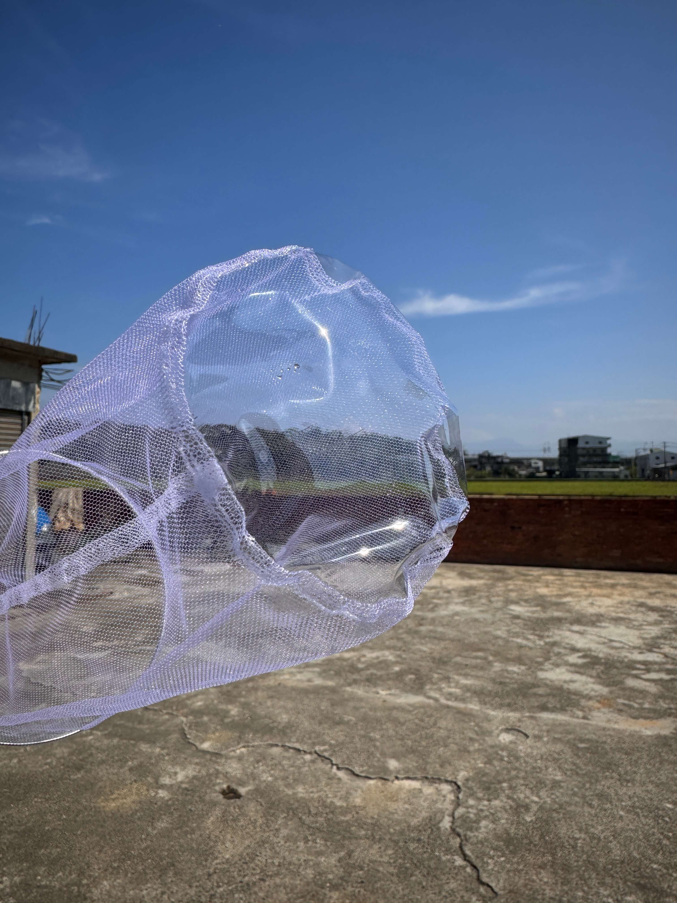

水族用品｜新竹新埔宇魚水族
純手工《有底》 掛式隔離網-L
現貨供應中NT$ 250 起
【宇魚嚴選】純手工・有底立體隔離網 真正為小魚設計的「用餐區」，不只隔離更要養壯 這款純手工打造的隔離網，最大的特色就在於底部採用了塑膠布設計。比起全網面，它更立體、不塌陷，最重要的是，這讓小魚可以慢慢啄食掉落在底部的飼料或豐年蝦，完全不會浪費，這對剛出生的仔魚成長至關重要！超高通水性的設計，讓網內水質跟主缸同步，減少緊迫，是職業玩家在缸內接生與育苗的首選神器。 🔥 產品特色 🔹 塑膠底設計： 底部立體不變形，能留住食物，讓小魚慢慢啄食，營養吸收更到位。 🔹 極佳通透性： 網目細緻但不影響水流交換，溶氧量充足，小魚長得更健康。 🔹 多功能使用： 可以當作一般隔離，也能直接套個內層在缸內接生，用途超靈活。 🔹 雙尺寸選擇： S 號： 直徑 9cm / 深度 15cm（適合小型缸、少量育苗） L 號： 直徑 13cm / 深度 20cm（適合中大型缸、整胎仔魚） 💡 宇魚真心話 宇哥： 「我最喜歡這個塑膠底，以前全網底面的餵豐年蝦都會漏光光，小魚吃不到。用這款食物會留在底部，看著小魚慢慢啄，心裡踏實很多。」 柏哥： 「這款掛上去真的很穩，整體型態很立體，不會縮成一團。依照魚缸高度選尺寸，掛在缸邊好觀察又不佔空間，真的很方便。」
價格、規格與庫存
商品與購買資訊
- 商品編號a6
- 商品分類水族用品
- 門市位置新竹縣新埔鎮義民路二段630巷9號
- 購買方式門市挑選／網站下單；活體提供專業包裝配送
購買注意事項
🔹 依缸深挑選： 購買前請先確認魚缸高度，挑選適合的深度（15cm 或 20cm）。 🔹 定期刷洗網面： 雖然通水性好，但時間久了網目可能會卡藻或有機物，建議定期拿起來輕輕刷洗，維持水流順暢。 🔹 安裝位置： 建議掛在水流平穩處，避免出水口直衝，讓小魚能安穩地在底部用餐。 🔹 收納乾燥： 純手工網布較細緻，不使用時請清洗乾淨並陰乾，能延長使用壽命。